Schritt-für-Schritt-Anleitung durch alle Bereiche von AERIS Doku — mit echten Bildschirmfotos aus der laufenden App
Dieses Handbuch führt einmal vollständig durch die App: von der ersten PIN-Einrichtung über die tägliche Dokumentation bis zu Abrechnung, Prüfbereitschaft und Datensicherung. Es ersetzt keine der einzelnen Fachdokumente unter „Dokumente" (Leitlinien, QM-Unterlagen, Notfallpläne) — es erklärt, wo man in der App etwas findet und wie die Bedienung funktioniert.
Beim allerersten Start verlangt AERIS die Festlegung einer 6-stelligen PIN. Diese PIN verschlüsselt alle Gesundheitsdaten direkt auf dem Gerät — es gibt kein Master-Passwort und keine „PIN vergessen"-Funktion. Bei Verlust der PIN sind die gespeicherten Daten nicht mehr entschlüsselbar.
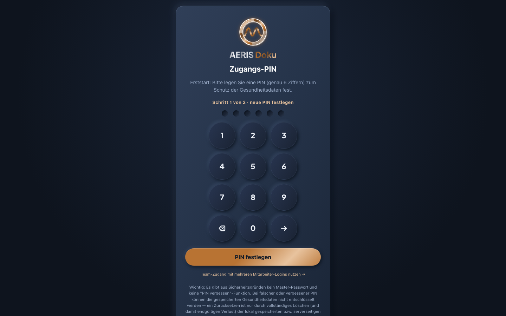
Links steht dauerhaft die Hauptnavigation, gegliedert in fünf Gruppen. Auf dem Smartphone erscheint stattdessen eine Tableiste am unteren Bildschirmrand mit den wichtigsten Punkten.
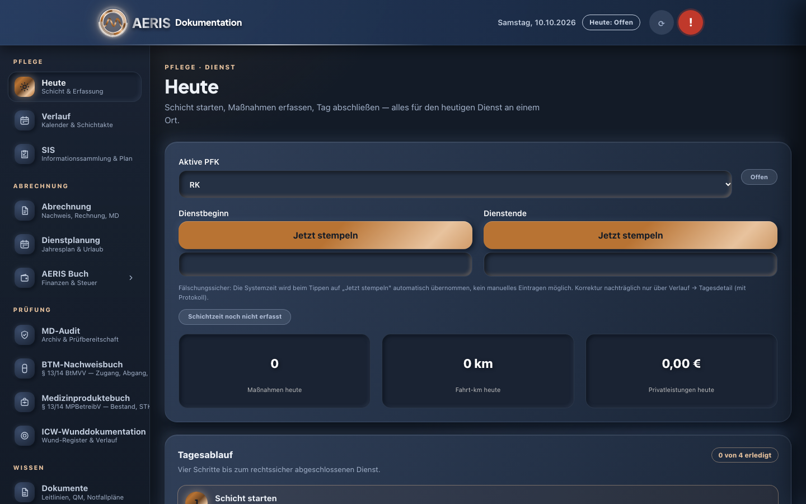
| Gruppe | Enthält |
|---|---|
| Pflege | Heute, Verlauf, SIS — die tägliche Dokumentationsarbeit |
| Abrechnung | Abrechnung, Dienstplanung, AERIS Buch (öffnet die separate Finanz-App in neuem Tab) |
| Prüfung | MD-Audit, BTM-Nachweisbuch, Medizinproduktebuch, ICW-Wunddokumentation |
| Wissen | Dokumente, DNQP-Standards (Nachschlagewerke, öffnet als Überlagerung) |
| System | Einstellungen |
Der Startbildschirm nach dem Entsperren. Hier beginnt und beendet man die eigene Schicht per Zeitstempel („Jetzt stempeln" — die Systemzeit wird automatisch übernommen, ein manuelles Eintragen ist bewusst nicht möglich, das verhindert rückdatierte Zeiten). Darunter die Tageszähler (Maßnahmen, Fahrt-Kilometer, Privatleistungen) und ein vierstufiger Tagesablauf als Orientierung.
Zeigt jeden Monat als Kalender; farbige Punkte markieren Tage mit Einträgen (SGB XI, SGB V, Beratung, Fahrt) oder Privatleistungen (Raute).
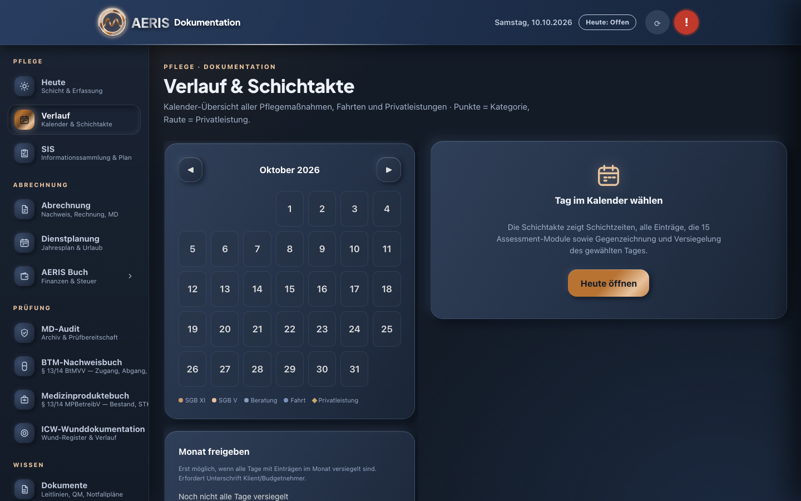
Ein angeklickter Tag öffnet die Schichtakte: Dienstzeiten, alle Pflegemaßnahmen/Fahrten/Privatleistungen des Tages, das vollständige Korrektur-Protokoll (Audit-Log) sowie die 18 Assessment-Module.
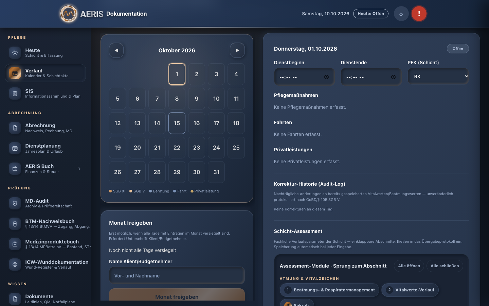
Innerhalb der Schichtakte stehen 18 einklappbare Fachabschnitte zur Verfügung, gruppiert nach Themen (Atmung & Vitalzeichen, Schmerztherapie & Neurologie, Haut/Wunde/Lagerung, Ernährung & Medikation, Sicherheit & Ereignisse). Über die Sprungmarken oben springt man direkt zum gewünschten Abschnitt, statt zu scrollen.
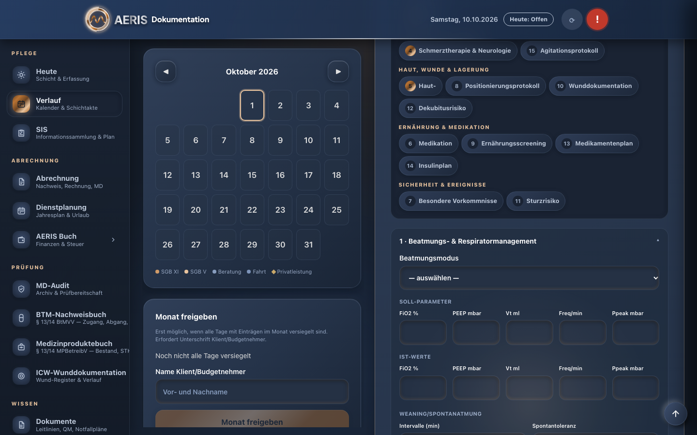
Die Strukturierte Informationssammlung (SIS) nach dem bundesweit einheitlichen Verfahren, angepasst an die außerklinische Intensivpflege. Sechs Themenfelder (Kognition, Mobilität, Krankheitsanforderungen, Selbstversorgung, soziale Beziehungen, Haushaltsführung) als erste Reiterkarte, der daraus abgeleitete Maßnahmeplan als zweite.
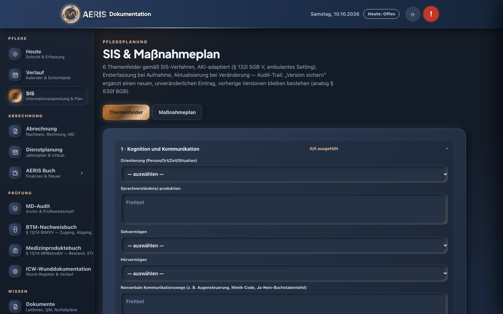
Für den gewählten Monat: Leistungsnachweis (nur Pflegemaßnahmen, keine Fahrten/Privatleistungen), Rechnung, Steuerberater-Übergabe und MD-Prüfbereitschaft als vier Reiter. Zusätzlich die Fieberkurve (mehrtägiges Querformat-Protokoll) und ein direkter Link zu AERIS Buch für Finanzen/Belege.
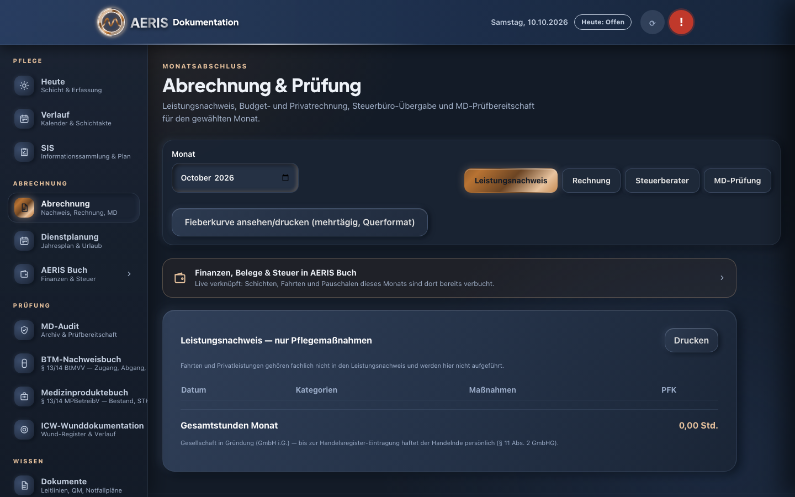
Erzeugt automatisch einen Jahresdienstplan (12-Stunden-Schichten, Früh-/Nachtblöcke, 120 Soll-Stunden/Monat) sowie die Urlaubsplanung (36 Tage/Jahr in 4 Quartalen). Fixtermine (Fortbildung, Steuerberater, Anwalt) zuerst eintragen — sie werden beim Generieren automatisch ausgespart.
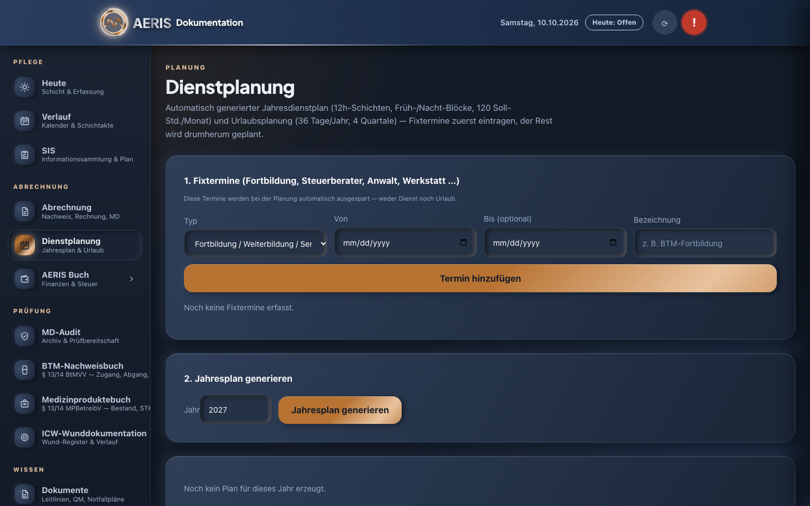
Jeder abgeschlossene Tag wird automatisch hash-verkettet archiviert — manipulationssicher gegen nachträgliche Veränderung. Im Team-/Server-Modus wird der tägliche Ketten-Hash zusätzlich als fälschungssicherer Anker beim Server hinterlegt.
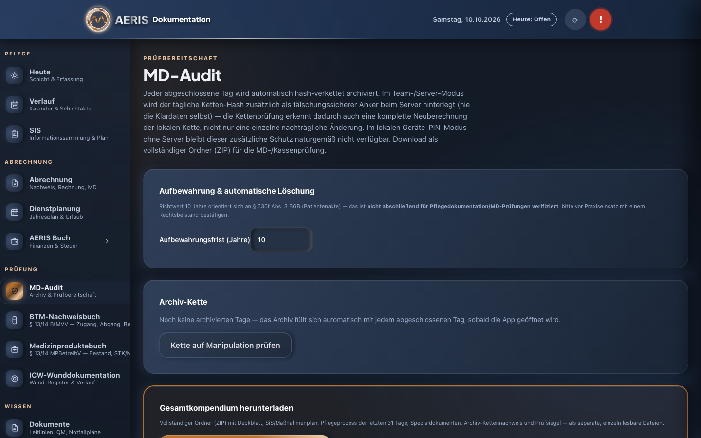
Nachweis von Verbleib und Bestand der Betäubungsmittel nach § 13/§ 14 BtMVV. Zuerst ein Präparat anlegen (Angaben danach bewusst nicht mehr änderbar, für die Konsistenz der Nachweiskette), danach Zugänge/Abgänge erfassen — der Bestand wird automatisch nachgeführt.
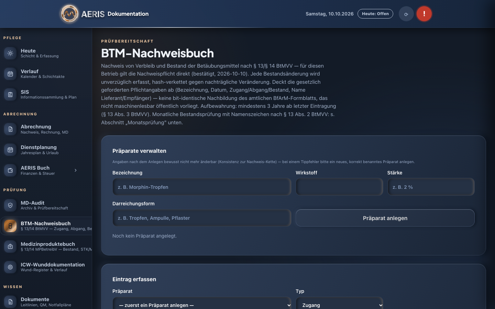
Bestandsverzeichnis und Nachweisbuch für eingesetzte Medizinprodukte (Beatmungsgerät, Absauggerät, Trachealkanüle u. a.) nach § 13/14 MPBetreibV — Funktionseinweisung, sicherheitstechnische Kontrollen (STK, spätestens alle 2 Jahre) und messtechnische Kontrollen (MTK).
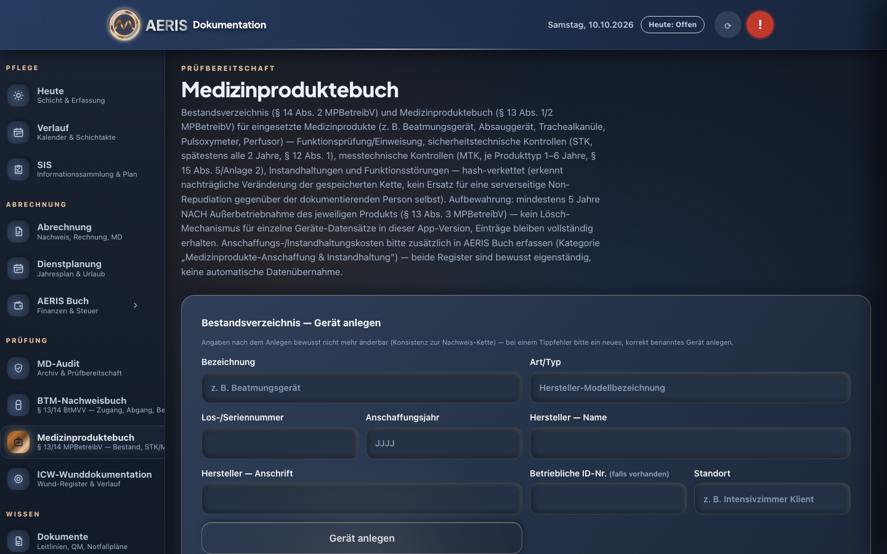
Eigenständiges Wund-Register mit chronologischem Verlauf je Wunde, nutzt die standardisierte Fachterminologie der Initiative Chronische Wunden e.V. (ICW).
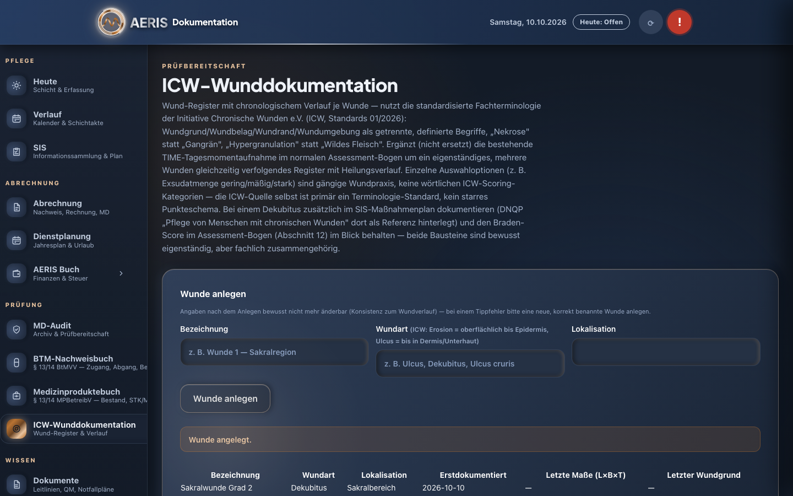
Mehrere Wunden gleichzeitig verfolgbar — jede mit eigenem Verlauf (Maße, Wundgrund, -rand, -umgebung, Exsudat, Schmerz). Ergänzt, ersetzt nicht die tagesaktuelle Haut-/Wundeinschätzung im Assessment-Abschnitt 5.
Vier Kategorien mit insgesamt deutlich über 20 Dokumenten: Expertenstandards & Leitlinien (DNQP, AWMF-S1/S3), QM & Sicherheit (Notfallpläne, Hygiene, Beschwerdeprotokolle — darunter auch dieses Handbuch und das QM-Handbuch zum Agenten-Prüfschema), klinisches Nachschlagewerk sowie eigene, unternehmensspezifische Dokumente.
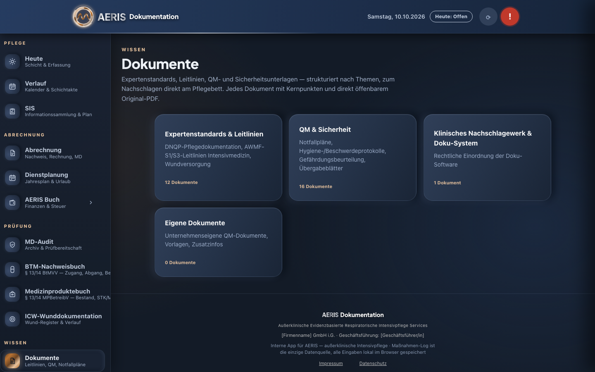
DNQP-Standards (eigener Navigationspunkt unter „Wissen") öffnet ein schnelles Nachschlage-Überlagerungsfenster für die Expertenstandards, ohne die aktuelle Seite zu verlassen.
Stammdaten, Sicherheit und Systemfunktionen an einem Ort — in der Reihenfolge, wie sie beim Herunterscrollen erscheinen: eigene PIN ändern, Branding (eigenes Logo/Name statt „AERIS"), Team-Mitglieder (nur Server-Modus), Mandant endgültig löschen, Datensicherung, Gerätespeicher, Licht-/3D-Effekte, Sätze & Pauschalen, Firmendaten, Unterschrift, PFK-Liste, SKR-Kontenzuordnung.
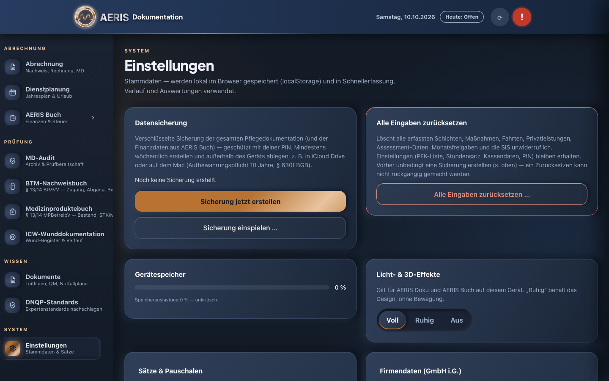
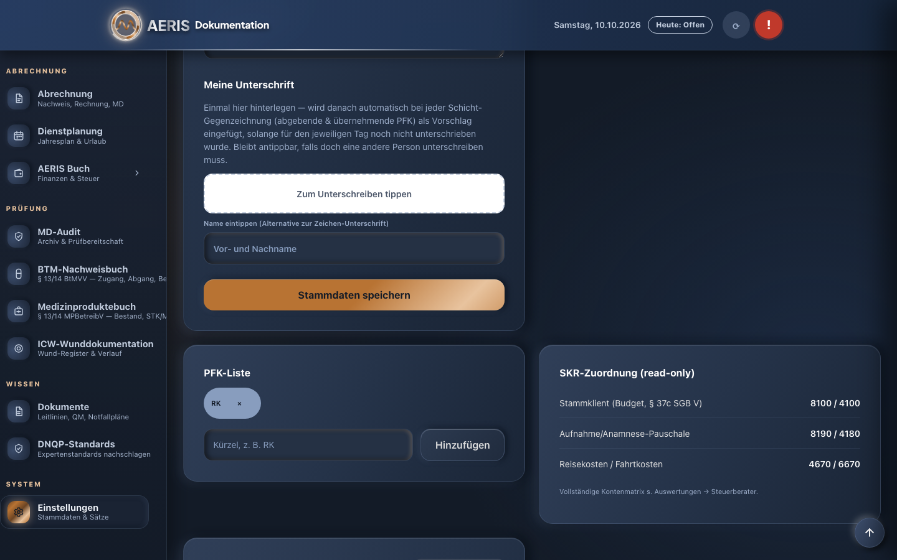
AERIS speichert im lokalen Geräte-Modus ausschließlich auf diesem einen Gerät. Geht das Gerät verloren oder wird es zurückgesetzt, sind die Daten ohne vorherige Sicherung unwiederbringlich weg — es gibt keinen Cloud-Automatismus.
Bei inhaltlichen Fragen zu einzelnen Fachabschnitten (Rechtsgrundlagen, Primärquellen, Abrechnungsziffern) zuerst unter „Dokumente" nachsehen — jedes Fachdokument nennt seine Primärquelle. Bei technischen Problemen oder Unklarheiten zur Bedienung die Betreiberin/den Betreiber dieser App kontaktieren (Kontaktdaten im Impressum am Seitenende der App-Startseite).